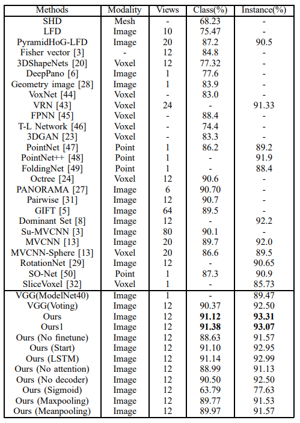
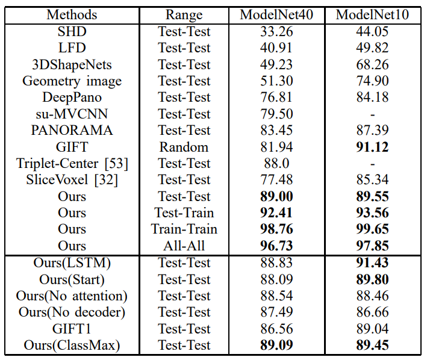
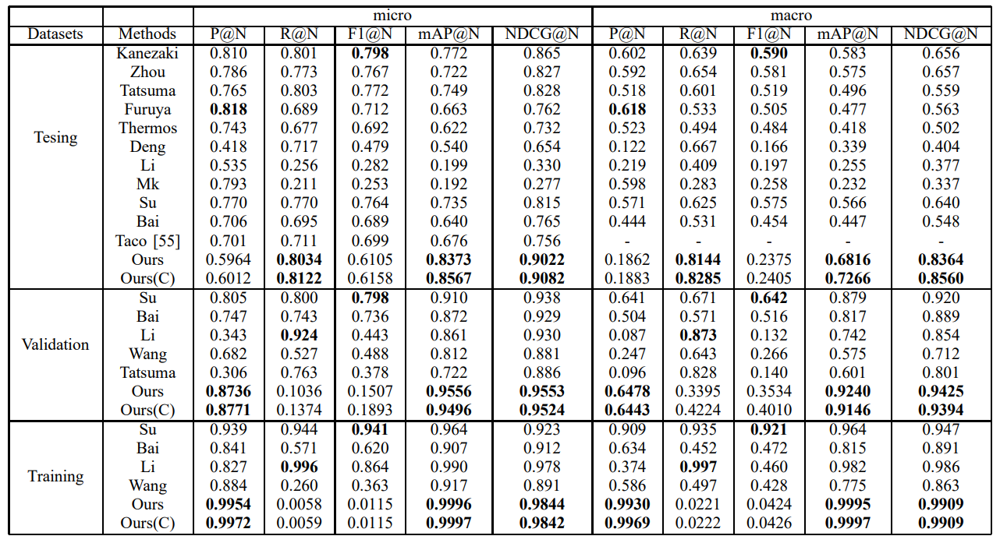

SeqViews2SeqLabels: Learning 3D Global Features via Aggregating Sequential Views by RNN with Attention
School of Software, Tsinghua University, Beijing, China

Figure 1: The framework of SeqViews2SeqLabels.
Learning 3D global features by aggregating multiple views has been introduced as a successful strategy for 3D shape analysis. In recent deep learning models with end-to-end training, pooling is a widely adopted procedure for view aggregation. However, pooling merely retains the max or mean value over all views, which disregards the content information of almost all views and also the spatial information among the views. To resolve these issues, we propose Sequential Views To Sequential Labels (SeqViews2SeqLabels) as a novel deep learning model with an encoder-decoder structure based on Recurrent Neural Networks (RNNs) with attention. SeqViews2SeqLabels consists of two connected parts, an encoder-RNN followed by a decoder-RNN, that aim to learn the global features by aggregating sequential views and then performing shape classification from the learned global features, respectively. Specifically, the encoder-RNN learns the global features by simultaneously encoding the spatial and content information of sequential views, which captures the semantics of the view sequence. With the proposed prediction of sequential labels, the decoder-RNN performs more accurate classification using the learned global features by predicting sequential labels step-by-step. Learning to predict sequential labels provides more and finer discriminative information among shape classes to learn, which alleviates the overfitting problem inherent in training using a limited number of 3D shapes. Moreover, we introduce an attention mechanism to further improve the discriminative ability of SeqViews2SeqLabels. This mechanism increases the weight of views that are distinctive to each shape class, and it dramatically reduces the effect of selecting the first view position. Shape classification and retrieval results under three large-scale benchmarks verify that SeqViews2SeqLabels learns more discriminative global features by more effectively aggregating sequential views than state-of-the-art methods.
{kind=link}
Figure 2: Modelnet10 Classification result.
{kind=link}
Figure 3: Modelnet40 Classification result.
{kind=link}
Figure 4: Modelnet Retrieval result.
{kind=link}
Figure 5: Shapenet Retrieval result.
Zhizhong Han, Mingyang Shang, Zhenbao Liu, Chi-Man Vong, Yu-Shen Liu, Junwei Han, Matthias Zwicker, C.L. Philip Chen. SeqViews2SeqLabels: Learning 3D Global Features via Aggregating Sequential Views by RNN with Attention. IEEE Transactions on Image Processing, 2019, 28(2): 658-672.
Zhizhong Han, Email address: h312h@mail.nwpu.edu.cn.
Mingyang Shang, Email address: smy16@mails.tsinghua.edu.cn.